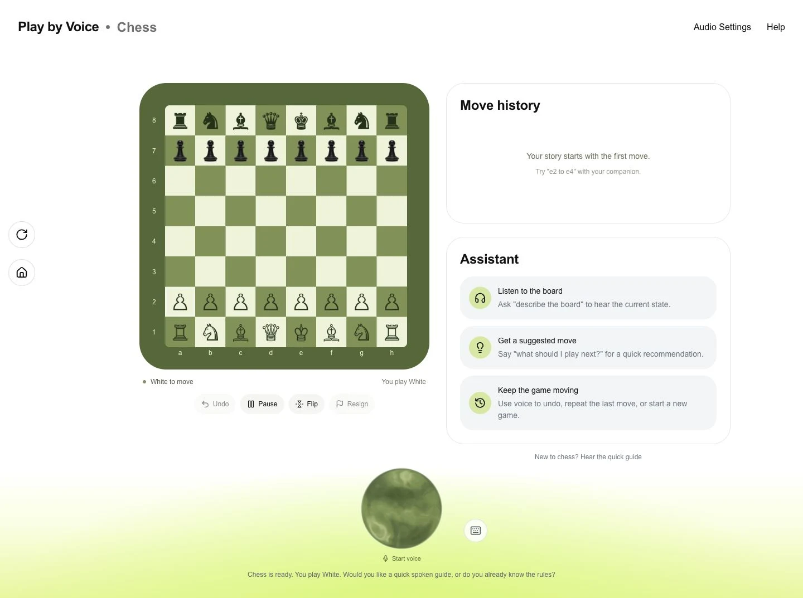

Accessible gaming, powered by voice
Play beyond
the screen.
A different way into the game. Play Chess through conversation, with a companion by your side.

A conversation, not a complication
Speak. Listen. Play.
The board is just the beginning. Ask about a position, talk through a move, and let your companion handle the controls.

The real game. Your own pace.
Find your next adventure
Choose your world.
A growing world of games, brought closer by conversation.
Different games. One familiar companion.
A growing collection
Loups-Garous
Listen closely. Everyone has a story to tell.
In the makingTic-Tac-Toe
A familiar little challenge, played your way.
In the makingThis is just the beginning
More games. More ways in.
We’re starting with Chess and building toward a wider world of voice-led play.
A natural way to play
A game starts with
a conversation.
-
01
Choose.
Open Chess from the game picker. Select the companion orb to start voice.
-
02
Listen.
Allow microphone access. Ask for a quick guide or a description of the board.
-
03
Speak.
Say your move. Confirm it, hear what happens, and take your next turn.
A first click and microphone permission get voice started. Keyboard and typed commands work too.
Less between you and the game
Your move,
in your words.
No rush. No perfect phrasing.
Just you, your next move, and a little guidance when you need it.
Illustrative conversation. Moves are confirmed by default.
No recording or
microphone needed to read this example.
Access is where we begin
Built around
speaking and listening.
A game should make room for the player. Play by Voice is being built with blind and low-vision players in mind.
-
Ask about the board
Explore pieces, squares, and your move history through the companion.
-
Play your way
Use voice, typed commands, or the keyboard. Adjust narrator volume and move confirmation in settings.
-
Make space for your screen reader
An optional mode announces text updates and mutes companion audio.
A hackathon prototype, still learning. Testing with blind and low-vision players and across assistive technologies is still ahead.
Before your first move
A few things
you might be wondering.
Answers from our product FAQ. No microphone needed.
A little clarity before your next adventure.